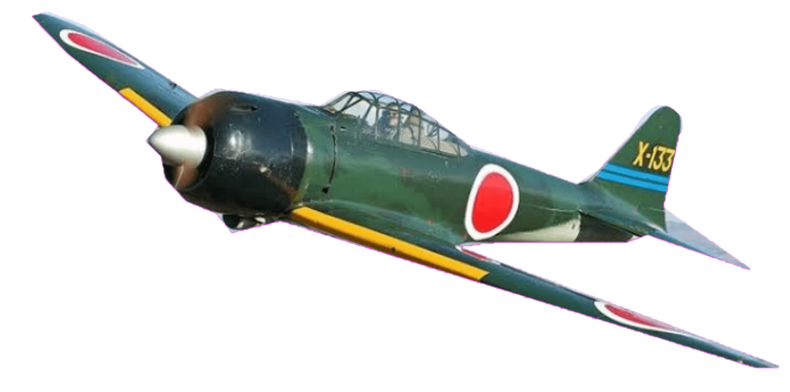
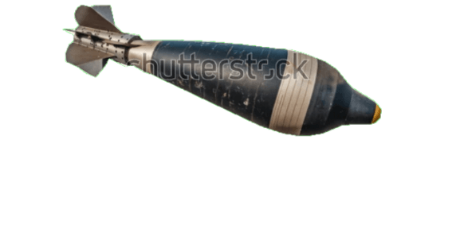
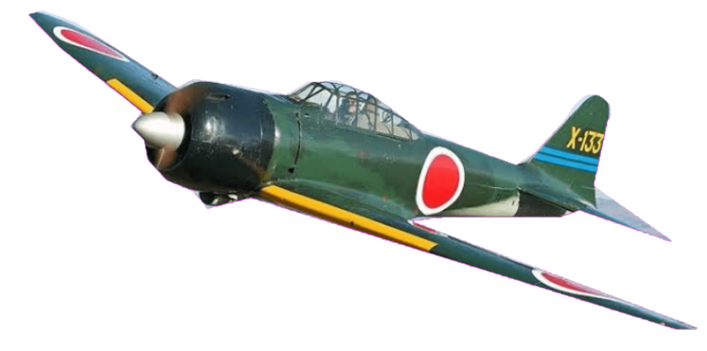
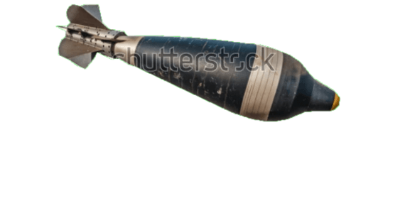

Film:"Coron wreck diving"

Your Journey to the wreck diving
About the Olympia Maru
The Olympia Maru, a Japanese freighter sunk during World War II, rests in Coron Bay, Palawan. This wreck, located at depths ranging from 12 to 27 meters, offers an intriguing dive for enthusiasts interested in wartime history beneath the sea.
What Makes It Special
Divers exploring the Olympia Maru can witness its well-preserved structure, including cargo holds and engine rooms. Marine life, such as batfish and lionfish, thrives around the wreck, creating a captivating underwater ecosystem.
Diving Highlights of Olympia Maru
- Depth: 12-27 meters
- Visibility: 10-15 meters
- Marine Life: Batfish, lionfish, and colorful corals
- Experience Level: Intermediate divers


 




Dive Tips for Olympia Maru
Due to its depth and historical artifacts, diving at Olympia Maru is suitable for divers with advanced open water certification.
Planning Your Dive
Umali Dive Center , we don’t just offer dives — we create unforgettable underwater experiences. Whether you're a seasoned diver or just starting your adventure, our expert team is dedicated to providing safe, exciting, and personalized diving trips. We explore the most stunning dive sites, offer high-quality equipment, and maintain the highest safety standards. What sets us apart is our passion for the ocean, our friendly atmosphere, and our commitment to making every dive memorable. Join a community of like-minded adventurers, discover vibrant marine life, and create stories you'll want to share again and again. Come dive with us — your next great adventure starts here!